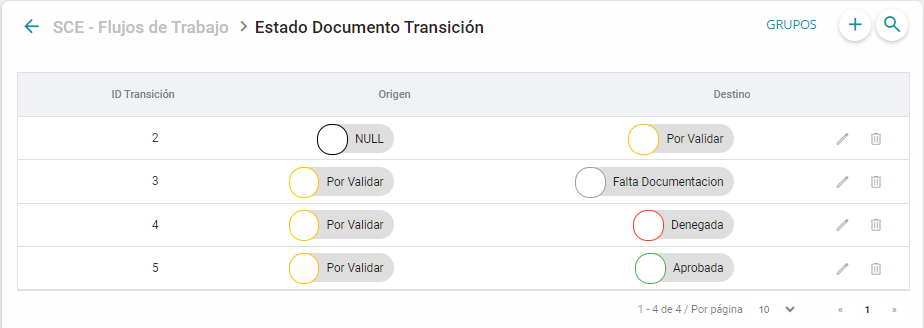
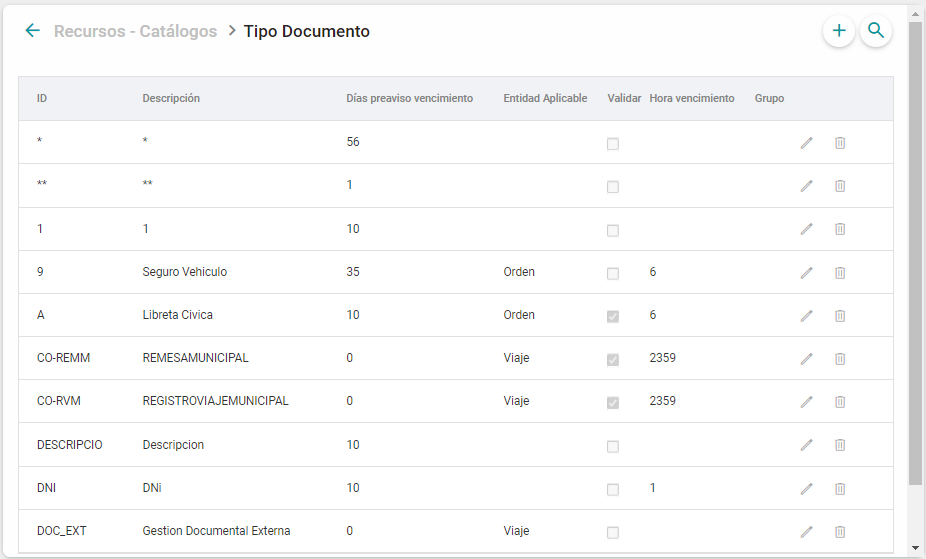
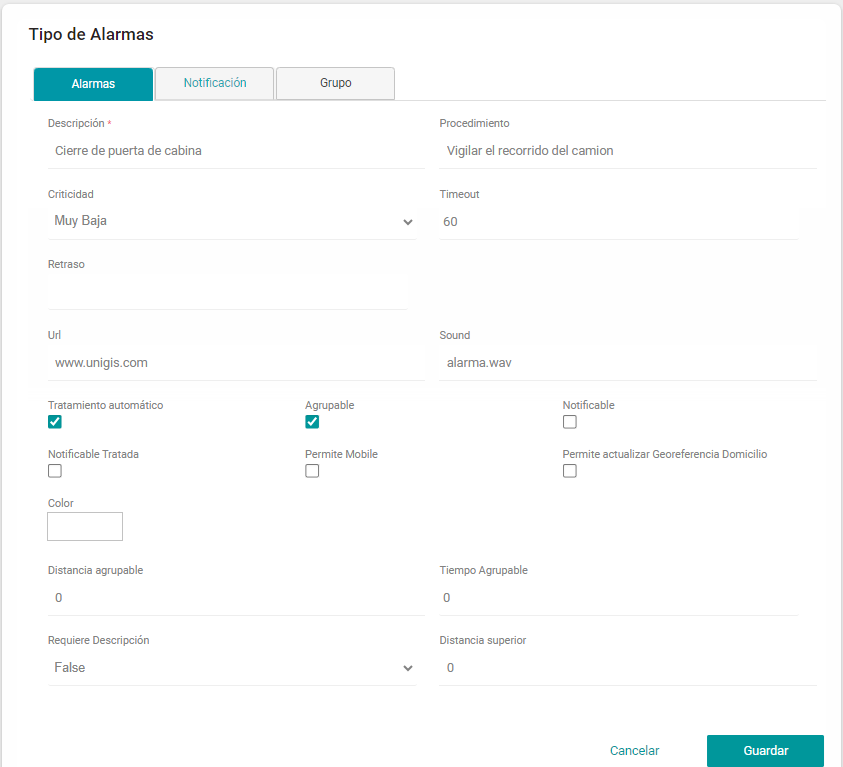

Registro Nacional Despachos de Carga (RNDC)#
Descripción#
El objetivo de este documento es proporcionar al usuario la información necesaria para realizar el proceso del Registro de viajes, comprendiendo las funcionalidades del sistema de información Registro Nacional Despacho de Carga (RNDC) mediante UNIGIS.
Actualmente se tienen manifiesto / remesas tipo Nacionales y municipales, integración de terceros y vehículos.
Características#
Integración de Terceros:
Proceso de integración Manual para Conductor. Proceso de integración Manual para Propietario. Proceso de integración Manual para Clientes. Proceso de integración Manual para Orden. Proceso de integración Manual para Domicilio Orden. Proceso de integración Manual para Transporte. Proceso de integración Manual para Depósito.
Integración de Vehículos y Remolques:
Proceso de integración para vehículos no articulados. Proceso de integración para Camiones (Tractores). Proceso de integración para Remolques y Semirremolques.
Creación de Remesas y Manifiestos Municipales:
Separar Viajes de tipo Pick Up y/o Delivery Municipales. Integraciones de Remesas y Manifiestos Municipales. Imprimir las Hojas de Manifiesto y Remesa municipal con el nombre de “Registro de Transporte Municipal”.
Creación de Remesas y Manifiestos Nacionales:
Separar Viajes de tipo Pick Up y/o Delivery Nacionales. Integraciones de Remesas y Manifiestos Nacionales. Imprimir las Hojas de Manifiesto y Remesa con el nombre de “Registro de Transporte Nacional”.
Cumplimiento de Manifiestos Municipales:
Cumplimiento de Manifiesto. Cumplimiento de Manifiesto con suspensión.
Cumplimiento de Manifiestos y Remesas Nacionales:
Cumplimiento de Remesa (Entrega mayor al 50%). Cumplimiento de Remesa con Suspensión (entrega menor al 50%). Cumplimiento de Manifiesto. Cumplimiento de Manifiesto con Suspensión (Viajes con terminación anticipada).
Anulación de Manifiestos y Remesas:
Permite anular dichos documentos por casos de siniestros o eventos imprevistos. Agregar motivos de Anulaciones de las remesas para poder tener un registro de ello.
Anulación de cumplimientos de Remesas y Manifiestos:
Permite anular el cumplimiento por error al cumplir un documento. Agregar motivos de anulaciones de cumplimiento para poder tener un registro.
Funcionalidades Monitor RNDC:
Visualizar el XML del último estado de una integración a RNDC. Con permisos se podrá editar el XML de integración. Funcionalidad de Bitácora. Filtros. Alertas de errores de Integración. Reintentos de Integración. Documentación de solución a errores del ministerio.
Información Técnica#
Tablas y Campos#
ConfiguracionIntegracionRNDC
Sirve para configurar los accesos para integración a los servicios del ministerio de Colombia.
Nombre Campo |
Descripción |
|---|---|
URLIntegracion |
URL para integración al ministerio de transporte de Colombia. Se coloca la URL principal y para efectos de reintentos se puede colocar la misma URL separadas por “|”. |
Usuario |
Clave de acceso al portal del ministerio de transporte de Colombia. |
Password |
Contraseña de acceso al portal del ministerio de transporte de Colombia. |
IdEmpresa |
Id de la empresa que aplica para la configuración de integración RNDC. |
IdSucursal |
Id de la sucursal que aplica para la configuración de integración RNDC. |
IdOperacion |
Id de la operación que aplica para la configuración de integración RNDC. |
Eliminado |
Dato que identifica la eliminación lógica de la configuración, valor 1 = Eliminado. |
FechaEliminacion |
Fecha en la que el registro fue eliminado en caso de aplicar |
URLContingencia |
URL de contingencia para integración al ministerio de transporte de Colombia. Ejemplo: http://plc.mintransporte.gov.co:8080/soap/IBPMServices http://plcrndcws2.mintransporte.gov.co:8080/soap/IBPMServices Se coloca la URL secundaria de contingencia para cuando la principal se encuentra caída en RNDC. |
DocumentoIntegracionRNDC
Sirve para mapear los tipos de documentos Unigis contra los documentos utilizados para integración con el ministerio de Colombia.
Nombre Campo |
Descripción |
|---|---|
ReferenciaDocumento |
Referencia del documento para integrar o integrado ante el ministerio de Transporte de Colombia. |
IdTipoDocumento |
ID del Tipo que refiere al documento a integrar o integrado ante el ministerio de Transporte de Colombia. |
CodigoIntegracion |
Código para reportar en los XML para indicar el documento de identificación. |
IdEstadoDocumentoIntegrado |
ID del estado del documento en el que se integra ante el ministerio de Transporte de Colombia. |
IdEstadoDocumentoAnulado |
ID del estado del documento en el que se anula ante el ministerio de Transporte de Colombia. |
IdEstadoDocumentoInicial |
ID del estado inicial del documento. |
EntidadIntegracionRNDC
Sirve para definir las reglas y mapeo de datos entre UNIGIS y el ministerio de transporte de Colombia.
Nombre Campo |
Descripción |
|---|---|
Entidad |
Nombre de la entidad o regla por aplicar en la configuración de la integración de datos al RNDC. |
IdEntidad |
ID de la entidad que aplica para la configuración de la integración de datos al RNDC. |
CodigoIntegracion |
Código de integración que se envía en los XML enviados al RNDC, o regla por aplicar en la configuración de envío. |
IdEmpresa |
ID de la empresa que funciona como filtro para aplicar una configuración o regla de integración. |
IdOperacion |
ID de la operación que funciona como filtro para aplicar una configuración o regla de integración. |
IdTipoViaje |
ID del tipo de viaje que funciona como filtro para aplicar una configuración o regla de integración. |
IdCategoriaViaje |
ID de la categoría de viaje que funciona como filtro para aplicar una configuración o regla de integración. |
IdCliente |
ID del cliente que funciona como filtro para aplicar una configuración o regla de integración. |
TipoRemesa |
Tipo de Remesa que se contempla para la integración con la configuración o regla de integración. |
Seguridad Permisos Actions#
Aplicación |
Nombre |
Formulario |
Descripción |
|---|---|---|---|
Admin |
logIntegracionRNDC |
ModuloEntidadIntegracionRNDC |
Acceso a Módulo. |
Admin |
ModuloEntidadIntegracionRNDC |
ModuloGestionCatalogosRNDC |
Acceso a Módulo. |
Admin |
ModuloGestionCatalogosRNDC |
ModuloRNDCDocumentoIntegración |
Acceso a Módulo. |
Admin |
ModuloRNDCDocumentoIntegración |
MonitorRNDC |
Acceso a Módulo. |
Admin |
ReintentoCliente |
MonitorRNDC |
Reintento de integración. |
Admin |
ReintentoClienteOrden |
MonitorRNDC |
Reintento de integración. |
Admin |
ReintentoConductores |
MonitorRNDC |
Reintento de integración. |
Admin |
ReintentoDeposito |
MonitorRNDC |
Reintento de integración. |
Admin |
ReintentoParadaMunicipal |
MonitorRNDC |
Reintento de integración. |
Admin |
ReintentoParadas |
MonitorRNDC |
Reintento de integración. |
Admin |
ReintentoPorXML |
MonitorRNDC |
Reintento integración desde la edición de XML. |
Admin |
ReintentoPropietario |
MonitorRNDC |
Reintento de integración. |
Admin |
ReintentoTransporte |
MonitorRNDC |
Reintento de integración. |
Admin |
ReintentoVehiculos |
MonitorRNDC |
Reintento de integración. |
Admin |
ReintentoViajes |
MonitorRNDC |
Reintento de integración. |
Admin |
ReintentoViajesMunicipal |
MonitorRNDC |
Reintento de integración . |
Pre Requisitos#
Es necesario contar con permisos de RNDC.
Tener una buena conexión a internet.
Contar con conexión a los WebService de RNDC.
Tener permisos para poder editar el XML.
Configuración#
Configuración Integración RNDC#
Se tiene que realizar una configuración mediante SQL para la Integración RNDC, los campos son:
URLIntegracion: URL para integración al ministerio de transporte de Colombia.
Usuario: Clave de acceso al portal del ministerio de transporte de Colombia.
Password: Contraseña de acceso al portal del ministerio de transporte de Colombia.
IdEmpresa: Id de la empresa que aplica para la configuración de integración RNDC.
Eliminado: Dato que identifica la eliminación lógica de la configuración, valor 1 = Eliminado.
Fecha Eliminación: Fecha en la que el registro fue eliminado en caso de aplicar
URLContingencia (tentativa): URL de contingencia para integración al ministerio de transporte de Colombia.
El script por utilizar es el siguiente:
INSERT INTO: ConfiguracionIntegracionRNDC(URLIntegracion,Usuario,Password,IdEmpresa,Eliminado) VALUES (%URLIntegracion%, %Usuario%, %Password%, %IdEmpresa%, %Eliminado%)
Carga de Divisiones políticas#
División Política Nivel 1.
Esta configuración se realiza para almacenar la división política nivel 1 de Colombia (departamentos), se debe realizar mediante carga masiva en un catálogo dinámico con la siguiente estructura.
Los datos necesarios son:
IdDivisionPoliticaNivel1: Valor default 0.
Descripcion: Descripción del departamento.
RefereciaExterna: Referencia en sistema externo del departamento.
IdPais: ID del país.
Latitud: Tipo de coordenada que identifica la ubicación del departamento.
Longitud: Tipo de coordenada que identifica la ubicación del departamento.
División Política Nivel 2.
Esta configuración se realiza para almacenar la división política nivel 2 y 3 de Colombia (municipios y comunas), se debe realizar mediante carga masiva en un catálogo dinámico con la siguiente estructura.
Los datos necesarios son:
IdDivisionPoliticaNivel2: Valor default 0.
IdDivisionPoliticaNivel1: ID de la División política Nivel 1 (departamento) donde se encuentra el municipio.
Descripcion: Descripción del Municipio más un guion y la comuna o barrio (ej. SANTA ELENA – MEDELLIN).
RefereciaExterna: Referencia en sistema externo del municipio más un guion y la comuna o barrio (ej. SANTA ELENA – MEDELLIN).
IdPais: ID del país.
Latitud: Tipo de coordenada que identifica la ubicación del municipio.
Longitud: Tipo de coordenada que identifica la ubicación del municipio.
Creación de Estados de Documento.#
Esta configuración se realiza para tener los estados que permitan controlar los documentos de integración al RNDC, Se debe ingresar al administrador Unigis –> SCE –> Flujos de Trabajo –> Estado Documento, los estados mínimos requeridos para la integración son:
Cumplido Suspensión
Cumplido Suspensión Error
Inicial
Integrado
Integrado Error
Cumplido
Cumplido Error
Anulado
Anulado Error
Anulado Cumplido
Anulado Cumplido Error
Para crear un estado a cualquier documento debe dar clic en el botón + se mostrarán lo siguientes campos:
Descripción: Campo de texto libre para darle nombre al estado a crear.
Tiempo Máximo: es el tiempo que se delimita para la vigencia del documento.
Referencia Externa: Campo de Texto libre para darle el nombre con el que lo identifique el usuario externamente.
Check “Vigencia”: si esta seleccionado el estado estará habilitado, en caso contrario no podrá ser utilizado.
Color: Sección para elegir el color con el que se identificará el estado del documento.
Check “Permite Agregar Archivo”: es un estado Action donde de acuerdo con el estado del documento, donde permite o no agregar un archivo nuevo.
Check “Recrear Viaje Manifiesto”: si esta seleccionado y el documento se encuentra en cierto estado este, puede ser utilizado para el nuevo viaje y migrar su manifiesto.
Check “Recrear Viaje Remesa”: si esta seleccionado y el documento se encuentra en cierto estado este, puede ser utilizado para el nuevo viaje y migar la misma remesa.
Creación de Transiciones de Estado de Documento#
Esta configuración se realiza para tener las transiciones necesarias para la ejecución de algunos procesos de RNDC, se debe realizar mediante captura en ABM de UNIGIS en la siguiente ruta:
Adminitración del Sistema –> Recursos –> Catálogos –> Tipo Documento
Creación TipoDocumento (TMS)#
Se debe ingresar al administrador del Sistema Recursos Catálogos Tipo Documento , al ingresar se podrá visualizar un listado con todos los tipos Documentos creados.
Para crear un nuevo tipo de documento se debe dar clic en el botón + se deben completar los campos:
ID*
Descripción*
Entidad Aplicable
Días Preaviso Vencimiento
Validar
Hora Vencimiento
Zona Horaria
Categoría Licencia
Máximo
Grupo
Check “Permite Creación Automática”
Check “Abstract”
Check “Mobile Notification”
Check “Requerido por Domicilio Orden”
Cantidad Mínima de Archivos
Check “Recrear Viaje”.
La nomenclatura necesaria para los tipos de documentos son las siguientes:
IdTipoDocumento |
Descripción |
|---|---|
CO-AC |
ACTA DE COMPROMISO |
CO-ACA |
CARTA AUTORIZACIÓN DE ANTICIPOS |
CO-ACFD |
ACUERDO DE CONFIDENCIALIDAD |
CO-AD |
ANTECEDENTES DISCIPLINARIOS |
CO-ADCEPCI |
ACTA DE DECLARACIÓN POLITICA DE CONFLICTO DE INTERESES |
CO-AP |
ACUERDO DE PAGO |
CO-ARL |
ADMINISTRADORA DE RIESGOS LABORALES |
CO-ARL-AUX |
ADMINISTRADORA DE RIESGOS LABORALES AUXILIAR |
CO-CANT |
CARTA AUTORIZACIÓN NOMBRAMIENTO TENEDOR |
CO-CARGA |
HOJA DE CARGA |
CO-CARGUE |
ORDEN DE CARGUE |
CO-CBASC |
CERTIFICADO BASC - ISO |
CO-CBC |
CERTIFICACIÓN BANCARIA CONDUCTOR |
CO-CBT |
CERTIFICACIÓN BANCARIA TENEDOR |
CO-CC |
CÉDULA DE CIUDADANIA CONDUCTOR |
CO-CC-AUX |
CÉDULA DE CIUDADANIA AUXILIAR |
CO-CCC |
CERTIFICADO CAMARA DE COMERCIO |
CO-CCCL |
CEDULA CUIDADANIA CLIENTE |
CO-CCRL |
CEDULA DE EXTRANJERIA CONDUCTOR |
CO-CEP |
CEDULA DE EXTRANJERIA PROPIETARIO |
CO-CERL |
CEDULA DE EXTRANJERIA REPRESENTANTE LEGAL |
CO-CET |
CEDULA DE EXTRANJERIA TRANSPORTE |
CO-CF |
CERTIFICADO DE FUMIGACION |
CO-CFT |
CERTIFICADO DE FUNCIONAMIENTO DEL TERMO |
CO-CJ |
CERTIFICADO JUDICIAL |
CO-CL |
CONTRATO LEASING |
CO-CM |
CERTIFICADO MEDICO |
CO-CMA |
CARNET MANIPULACION DE ALIMENTOS |
CO-CMA-AUX |
CARNET MANIPULACION DE ALIMENTOS |
CO-CMD |
CURSO MANEJO DEFENSIVO |
CO-CMG |
|
CO-CP |
CEDULA DE CIUDADANIA PROPIETARIO |
CO-CPF |
COPIA DE UNA FACTURA |
CO-CS |
CONCEPTO SANITARIO |
CO-CT |
CEDULA DE CIUDADANIA TRANSPORTE |
CO-CTL |
CERTIFICADO TRADICION Y LIBERTAD |
CO-CVR |
CONTRATO DE VINCULACIÓN RANSA |
CO-EF |
ESTADOS FINANCIEROS |
CO-EP |
EVALUACIÓN PRÁCTICA |
CO-ES |
CONCEPTO ESTUDIO DE SEGURIDAD |
CO-ET |
EVALUACION TEÓRICA |
CO-EX |
EXAMENES PSICOSENSOMETRICOS |
CO-FAC |
DOCUMENTO DE ENTREGA |
CO-FC |
FOTO CONDUCTOR |
CO-FRC |
FIRMA CONDUCTOR |
CO-FRT |
FIRMA TENEDOR |
CO-FV(F) |
FOTO DEL VEHICULO DE FRENTE |
CO-FV(P) |
FOTO DEL VEHICULO DE PERFIL |
CO-HD |
HABEAS DATA |
CO-HV |
HOJA DE VIDA CONDUCTOR |
CO-HV-AUX |
HOJA DE VIDA AUXILIAR |
CO-HVC |
FORMATO HOJA DE VIDA TERCEROS |
CO-HVIAJE |
HOJA DE VIAJE |
CO-ID |
IDENTIDAD CONDUCTOR |
CO-ID-PR |
IDENTIDAD PROPIETARIO |
CO-ID-TR |
IDENTIDAD TRANSPORTE |
CO-IEV |
INSPECCION DE EVALUACION Y SELECCION DE VEHICULOS NUEVOS |
CO-INS-CAR |
INSPECCION DE CARGUE |
CO-INS-DES |
INSPECCION DE DESCARGUE |
CO-IT |
INFRACCIONES DE TRANSITO |
CO-IVB |
INSPECCION VEHICULAR BIMESTRAL |
CO-LC |
LICENCIA |
CO-LC-C1 |
LICENCIA DE CONDUCCION C1 |
CO-LC-C2 |
LICENCIA DE CONDUCCION C2 |
CO-LC-C3 |
LICENCIA DE CONDUCCION C3 |
CO-MAN |
MANIFIESTO DE CARGA |
CO-NIT |
NÚMERO IDENTIFICACIÓN TRIBUTARIO TRANSPORTE |
CO-NITC |
NÚMERO IDENTIFICACIÓN TRIBUTARIO CLIENTE |
CO-NITP |
NÚMERO IDENTIFICACIÓN TRIBUTARIO PROPIETARIO |
CO-POLIZA |
PÓLIZA |
CO-POLM |
PÓLIZA DE MERCANCIA |
CO-PSV |
PLAN DE SEGURIDAD VIAL |
CO-PT |
PESO TARA |
CO-RC |
PRESENTACIÓN , REF COMERCIALES |
CO-REM |
REMESA DE CARGA |
CO-REMM |
REMESAMUNICIPAL |
CO-RF |
RESOLUCIÓN DE FACTURACIÓN |
CO-RL |
REFERENCIA LABORAL |
CO-RP |
REFERENCIA PERSONAL |
CO-RPA |
RELACIÓN PARQUE AUTOMOTOR |
CO-RT |
RESOLUCIÓN DE TRANSPORTE |
CO-RUNT |
REGISTRO UNICO NACIONAL DE TRANSITO |
CO-RUT |
RUT |
CO-RUTT |
REGISTRO UNICO TRIBUTARIO TENEDOR |
CO-RVM |
REGISTROVIAJEMUNICIPAL |
CO-SIMIT |
SIMIT |
CO-SIPLAFT |
SIPLAFT |
CO-SOAT |
SEGURO OBLIGATORIO DE ACCIDENTES DE TRANSITO |
CO-SS |
SISTEMA DE SEGURIDAD |
CO-TER |
TERCERO |
CO-TP |
TARJETA DE PROPIEDAD |
CO-TPR |
TARJETA DE PROPIEDAD REMOLQUE |
CO-VEH |
VEHÍCULO |
Creación de Documento Integración#
Esta configuración se realiza para hacer el mapeo de los tipos de documento UNIGIS contra los datos a enviar al ministerio, se debe realizar mediante captura en ABM de UNIGIS en la siguiente ruta:
Administración del Sistema –> Integrations Center –> RNDC –> Documento Integración
Los registros necesarios para el alta son:
Documentos de Integración:
Manifiesto: CO-MAN.
Remesa: CO-REM.
Tercero: CO-TER.
Vehículo: CO-VEH.
Estos registros deben tener un estado de documento INICIAL.
Documentos de Identificación:
CEDULA: Código de integración (C) y tipo de documento de acuerdo con la entidad.
NIT: Código de integración (N) y tipo de documento de acuerdo con la entidad.
PASAPORTE: Código de integración (P) y tipo de documento de acuerdo con la entidad.
TARJETA DE IDENTIDAD: Código de integración (T) y tipo de documento de acuerdo con la entidad.
NUIP: Código de integración (U) y tipo de documento de acuerdo con la entidad.
EXTRANJERIA Código de integración (E) y tipo de documento de acuerdo con la entidad.
Documentos del conductor:
Licencia: CO-LC.
Documentos del vehículo:
SOAT: CO-SOAT.
Creación de Alerta de Error de Integración.
Esta configuración se realiza para crear una alerta en caso de que por alguna eventualidad el Manifiesto no se pueda integrar ante el RNDC, se debe realizar mediante captura en ABM de UNIGIS en la siguiente ruta Administración del sistema –> Tracking –> Alertas –> Tipo de Alarmas.
Al seleccionar el botón + se abre el formulario para el registro de un nuevo tipo de alarma.
Los datos necesarios son:
Descripción: Nombre con el que se identificará la alerta.
Procedimiento: Proceso para que la alerta sea tratada.
Criticidad: Marcarla como crítica para que aparezca el ícono de alerta en el viaje.
Creación de Numeradores#
Esta configuración se realiza para dar los folios a manifiestos, remesas y numerar terceros, se debe realizar mediante captura en ABM de UNIGIS en la siguiente ruta Administración del Sistema –> SCE –> Catálogos –> Numeradores.
Los datos necesarios para generar los folios de Manifiestos y Remesas:
Descripción: Descripción/Nombre del numerador.
ReferencaExterna: Referencia del sistema externo en caso de existir, es utilizada para integraciones.
Activo: Flag para habilitar el numerador.
Prefijo: Identificador inicial del numerador.
Número: Número previo en el cual iniciará el contador.
Longitud: Tamaño de la cadena identificada como numerador, se completa con “ceros” antes del consecutivo.
Tipo: Entidad a la que aplicará el numerador (Manifiesto, Remesa, DomicilioOrden).
Operación: Filtro a la que se asignará ese numerador.
Nota
El numerador tiene como objetivo que ningún folio de integración ante el ministerio se envíe duplicado, ya que en caso de suceder el ministerio lo marca como error.
Datos Maestros#
Creación y/o Actualización de Tipo Eje#
Esta configuración se realiza para mapear los maestros del ministerio, si se tienen algunos previamente creados solo se hace el cruce con la data maestra del ministerio y se completa, si no se cargan todos, se debe realizar mediante captura en ABM de UNIGIS en la siguiente ruta:
Administración del Sistema –> Recursos –> Catálogos –> Tipo Ejes.
Creación y/o Actualización de Marcas#
Esta configuración se realiza para mapear los maestros del ministerio, si se tienen algunos previamente creados solo se hace el cruce con la data maestra del ministerio y se completa, si no se cargan todos, se debe realizar mediante captura en ABM de UNIGIS en la siguiente ruta:
Administración del Sistema –> Recursos –> Catálogos –> Marca.
Creación y/o Actualización de Líneas#
Esta configuración se realiza para mapear los maestros del ministerio, si se tienen algunos previamente creados solo se hace el cruce con la data maestra del ministerio y se completa, si no se cargan todos, se debe realizar mediante captura en ABM de UNIGIS en la siguiente ruta:
Administración del Sistema –> Recursos –> Catálogos –> Línea.
Creación y/o Actualización de Combustible#
Esta configuración se realiza para mapear los maestros del ministerio, si se tienen algunos previamente creados solo se hace el cruce con la data maestra del ministerio y se completa, si no se cargan todos, se debe realizar mediante captura en un catálogo dinámico de UNIGIS.
Administración del Sistema –> Sistema –> Catálogos –> Combustible.
Creación y/o Actualización de Modelo#
Esta configuración se realiza para mapear los maestros del ministerio, si se tienen algunos previamente creados solo se hace el cruce con la data maestra del ministerio y se completa, si no se cargan todos, se debe realizar mediante captura en ABM de UNIGIS en la siguiente ruta:
Administración del Sistema –> Recursos –> Catálogos –> Modelo.
Creación y/o Actualización de Color#
Esta configuración se realiza para mapear los maestros del ministerio, si se tienen algunos previamente creados solo se hace el cruce con la data maestra del ministerio y se completa, si no se cargan todos, se debe realizar mediante captura en ABM de UNIGIS en la siguiente ruta:
Administración del Sistema –> Recursos –> Catálogos –> Color.
Creación y/o Actualización de Tipo de Carrocería#
Esta configuración se realiza para mapear los maestros del ministerio, si se tienen algunos previamente creados solo se hace el cruce con la data maestra del ministerio y se completa, si no se cargan todos, se debe realizar mediante captura en ABM de UNIGIS en la siguiente ruta:
Administración del Sistema –> Recursos –> Catálogos –> Tipo de Carrocería.
El dato necesario es:
Kilogramos.
Creación de Formato de Carga#
Esta configuración se realiza para identificar los Formatos de Carga a reportar ante el ministerio, se debe realizar mediante captura en ABM de UNIGIS en la siguiente ruta:
Administración del Sistema –> SCE –> Viajes –> Formato Carga
Los datos necesarios son:
General.
Paqueteo.
Contenedores.
Viaje Vacío.
Varios Viajes en el Día.
Viaje de Ida y Regreso.
Creación de Tipo Empaque#
Esta configuración se realiza para identificar los tipos de empaque a reportar ante el ministerio, se debe realizar mediante captura en ABM de UNIGIS en la siguiente ruta:
Administración del Sistema –> SCE –> Viajes –> Tipo Empaque.
Parámetros#
Permiten activar la ejecución del proceso municipal dentro de los procesos nacionales. Es decir, que al tener activos entraran a los procesos de manifiesto nacional (cumplido/integración) y ejecutaran el proceso municipal según corresponda y al terminar continuara con el proceso nacional.
Administración del Sistema –> Sistema –> Parámetros
Parámetro Clave |
Valor |
Categoría |
Descripción del Parámetro |
|---|---|---|---|
RNDC |
1 |
No Determinada |
Activación de funcionalidad RNDC en el ambiente. |
EjecutaProcesoIntegracionMunicipalEnNacional |
1 |
RNDC |
Permite que se ejecute el proceso de integración municipal dentro del proceso nacional. |
EjecutaProcesoCumplidoMunicipalEnNacional |
1 |
RNDC |
Permite que se ejecute el proceso de cumplido municipal dentro del proceso nacional. |
logoPrimarioRNDC |
logoTCC |
RNDC |
Nombre con el que se buscara el archivo del logo. |
logoSecundarioRNDC |
Transporte |
RNDC |
Nombre con el que se buscara el archivo del logo. |
logoTerciarioRNDC |
Ministerio |
RNDC |
Nombre con el que se buscara el archivo del logo. |
RNDC_Connection_Active |
True |
RNDC |
RNDC Active |
RNDC_EnviaSede |
1 |
RNDC |
Activa o desactiva el envío de SEDE para terceros que son personas naturales, 1 = Activo, 0 = Inactivo. |
ValidaParadasPickupMunicipal |
1 |
RNDC |
Validar que el destino de la parada sea igual al destino viaje. |
ProcesoRNDCrecreacionviajes |
0 |
Viajes |
Ejecuta proceso RNDC en la recreación de viajes. |
Procesos#
Existen múltiples acciones o procesos que el Ministerio de Transporte espera le sean informadas mediante el RNDC durante toda la operación de carga y descarga de mercancía. Todos los procesos tienen un ID de Proceso del RNDC que debe ser enviada en cada una de las comunicaciones que se establezcan. A continuación, se detallan algunos de los procesos:
(ID 1) Registro de información de carga (No desarrollado): Es un proceso opcional de inicio que envía al RNDC la información de la carga a transportar, la ubicación del remitente y los tiempos pactados de cargue.
(ID 2) Registro de información de viaje (No desarrollado): Es un proceso opcional que sólo se obliga si se ha realizado el registro de información de carga. Esta información va a ser heredada hacia el manifiesto de carga. Si se realiza, la información a enviar comprende el conductor, el vehículo y la información preliminar de la carga.
(ID 3) Creación de remesa terrestre de carga: Es un proceso obligatorio que envía al RNDC toda la información correspondiente a la carga y descarga de la mercancía en cada uno de los puntos origen-destino-cliente. Se informan también los tiempos pactados de descargue, los tiempos reales de cargue y los datos de la póliza de la mercancía. También se ingresa información del remitente, destinatario y propietario de la carga a transportar. Es primordial que cuente con un consecutivo único para la empresa de transporte.
Administración del Sistema –> SCE –> Procesos
Nombre del Proceso |
Método a Ejecutar o SQL |
Descripción del Proceso |
|---|---|---|
< Creación de remesa terrestre de carga > |
< ProcesoEnviarRemesa > |
Configuración en transición de la parada. |
< Creación de remesa y manifiesto > |
< ProcesamientoCompletoRNDC > |
Método alterno para enviar a integrar todos los Terceros, Remesa y Manifiesto en una Transición del viaje. |
(ID 4) Creación de manifiesto: Es un proceso obligatorio hacia el RNDC que envía información del conductor, vehículo, remolque o semirremolque, origen y destino del viaje, además de todos los consecutivos de las remesas terrestres de carga que están contenidas en dicho manifiesto. También es primordial que cuente con un consecutivo único para la empresa de transporte. El proceso de creación/integración del manifiesto genera un código de seguridad que debe ser representado en la impresión del manifiesto mediante un código QR que se plasma en el mismo en conjunto con otros datos propios del viaje integrado.
Administración del Sistema –> SCE –> Procesos
Nombre del Proceso |
Método a Ejecutar o SQL |
Descripción del Proceso |
|---|---|---|
< Creación de manifiesto > |
< ProcesoEnviarManifiesto > |
Configuración en Transición del Viaje, debe tener previamente integradas las Remesas. |
< Creación de remesa y manifiesto > |
< ProcesamientoCompletoRNDC > |
Método alterno para enviar a integrar todos los Terceros, Remesa y Manifiesto en una Transición del viaje. |
(ID 5) Cumplido de remesa de carga: Es un proceso obligatorio que permite al RNDC conocer cómo y cuándo se realizó la entrega de la mercancía contenida en la remesa, ya sea parcial o totalmente, además de los tiempos logísticos de cargue y descargue. Para poder realizar este proceso, es importante que la remesa terrestre de carga haya sido creada/integrada exitosamente con anterioridad y que haya sido asociada correctamente a un manifiesto de carga.
Administración del Sistema –> SCE –> Procesos
Nombre del Proceso |
Método a Ejecutar o SQL |
Descripción del Proceso |
|---|---|---|
< CumplidoRemesa> |
< ProcesoCumplidoRemesa> |
Configuración en Transición de parada, la remesa debe encontrarse en estatus integrado. |
Nota
El proceso de cumplido de remesa depende del estado en la transición:
Para un CUMPLIDO NORMAL las transiciones de la parada relacionadas a la entrega deben tener marcado el check de Completar Cantidad Items que se encuentra en la parte inferior de la transición de parada en la ruta Administración del Sistema –> SCE –> Flujos de Trabajo –> Transiciones de Parada.
Para un CUMPLIDO SUSPENSIÓN se requiere indicar un motivo al momento de realizar la transición, por lo que se debe agregar los motivos a las transiciones posibles en Administración del Sistema –> SCE –> Flujos de Trabajo –> Transiciones de Parada –> Transición de Parada – Motivo.
(ID 6) Cumplido de manifiesto de viaje: Es un proceso obligatorio hacia el RNDC que debe ser utilizado una vez que todas las remesas contenidas en él han sido cumplidas exitosamente. Contiene información acerca de cómo fue ejecutado el viaje además de pagos adicionales o descuentos y el valor real del flete. También contiene información de más tiempos logísticos.
Administración del Sistema –> SCE –> Procesos
Nombre del Proceso |
Método a Ejecutar o SQL |
Descripción del Proceso |
|---|---|---|
< CumplidoManifiesto > |
< ProcesoCumplidoManifiesto > |
Configuración en Transición del Viaje, debe tener cumplidas las Remesas |
< CumplidoManifiesto > |
< RNDC_CumplidoSuspensionManifiestoRemesa > |
Configuración en Transición del Viaje, debe tener cumplidas las Remesas, debe tener como parámetro: Motivo de suspensión de la Remesa. Motivo suspensión para el manifiesto. Consecuencia de Manifiesto. |
(ID 7) Anulación de información de carga (No desarrollado): Proceso que permite la anulación de un envío de información de carga siempre y cuando esta no haya sido ni integrada a una información de viaje, ni haya sido convertida a una remesa terrestre de carga. Es posible modificar la información contenida para poder enviarla nuevamente.
(ID 8) Anulación de información de viaje (No desarrollado): Proceso que permite la anulación del envío de información de viaje siempre y cuando este no haya sido convertido a un manifiesto de viaje y que sus informaciones de carga contenidas no hayan sido convertidas a remesas terrestres de carga.
(ID 9) Anulación de remesa terrestre de carga: Este proceso opcional permite eliminar/borrar una creación de remesa terrestre de carga que haya sido generada exitosamente en el RNDC ya sea para crearla nuevamente con datos corregidos o porque ya no será parte de un manifiesto de viaje. Para poder utilizar este proceso, es necesario que las remesas que se pretenden anular no estén CUMPLIDAS ni tampoco asociadas a un manifiesto de viaje.
Administración del Sistema –> SCE –> Procesos
Nombre del Proceso |
Método a Ejecutar o SQL |
Descripción del Proceso |
|---|---|---|
<Proceso de anulación de Remesa> |
< ProcesoAnularRemesa> |
La remesa debe estar integrada, y se requiere indicar el motivo de la anulación de la parada. |
(ID 11) Creación de terceros: Envía al RNDC datos generales de las personas que interactúan en el envío y en la carga y descarga de mercancía como pueden ser Emisores, Remitentes, Propietarios de Vehículos, Transportistas, Conductores, etc.
Nota
Esta integración se realiza de manera automática pero en caso de requerir usarle de manera manual revisar el anexo “Integración de Terceros”.
(ID 12) Creación de vehículos: Envía al RNDC los datos generales de los vehículos disponibles para el transporte de mercancía, así como su relación con algunos de los terceros enviados previamente.
Nota
Esta integración se realiza de manera automática pero en caso de requerir usarle de manera manual revisar el anexo “Integración de Terceros”.
(ID 28) Anulación de cumplido de remesa de carga: Proceso que revierte el cumplido de una remesa terrestre de carga informando siempre el motivo.
Administración del Sistema –> SCE –> Procesos
Nombre del Proceso |
Método a Ejecutar o SQL |
Descripción del Proceso |
|---|---|---|
<Proceso de anulación de Cumplido de la Remesa> |
< ProcesoAnularCumplidoRemesa > |
La remesa debe estar cumplida, se requiere mandar como parámetro el motivo y la observación. |
(ID 29) Anulación de cumplido de manifiesto de viaje: Proceso que revierte el cumplido de un manifiesto de viaje informando siempre el motivo.
Administración del Sistema –> SCE –> Procesos
Nombre del Proceso |
Método a Ejecutar o SQL |
Descripción del Proceso |
|---|---|---|
< Proceso de anulación de Cumplido de Manifiesto > |
< ProcesoAnularCumplidoManifiesto > |
El manifiesto debe estar cumplido, se requiere mandar como parámetro el motivo y la observación. |
(ID 32) Anulación de manifiesto de viaje: Este proceso opcional permite eliminar/borrar la creación de un manifiesto de viaje que previamente ha sido creado exitosamente en RNDC ya sea para crearlo de nuevo con datos corregidos o porque el viaje ya no será ejecutado. Este proceso “libera” aquellas remesas asociadas a un manifiesto para poder anularlas también o asociarlas a otro manifiesto de viaje.
Administración del Sistema –> SCE –> Procesos
Nombre del Proceso |
Método a Ejecutar o SQL |
Descripción del Proceso |
|---|---|---|
< Proceso de anulación de Manifiesto > |
< ProcesoAnularManifiesto> |
El manifiesto debe estar integrado, se requiere mandar como parámetro el motivo y la observación. |
(ID 45) Cumplido inicial de remesa de carga (No desarrollado): Es un proceso opcional que envía al RNDC la información en tiempo real de la fecha y hora, latitud y longitud del cargue y descargue de la remesa.
(ID 54) Anulación de cumplido inicial de remesa (No desarrollado): Proceso que revierte el cumplido inicial de una remesa informando siempre el motivo.
Pantallas de Usuario#
Integración de Terceros (Proceso Manual)#
A continuación, se describen los paso a paso para poder realizar una integración de Depósitos y cualquier tercero.
En el monitor de RNDC (administración de sistema) cuando se cree un depósito o se edite alguno de los existentes, mediante un proceso automático se generará la documentación correspondiente y esta será integrada a RNDC, de igual manera a nivel del monitor deberá contar con un botón para realizar el proceso manual de envió de documentación, en el caso de que el proceso automático falle el paso a paso será el siguiente:
En el módulo “administración de sistema”. Se deberá dar clic y existen dos maneras de realizar la integración
Automático:
Al momento de crear o editar de un Tercero:
Se validará si el usuario cuenta con permisos de creación / edición.
Se validará de manera interna (BackEnd) que tenga encendido el parámetro RNDC.
Si todo se valida de manera satisfactoria, se enviará la integración de ese tercero a RNDC.
Dicha tarea deberá realizarse de forma asíncrona mediante hangfire .
Manual:
En el caso de que falle él envió de documentación deberá aparecer el detalle del envió fallido.
Caso conductor:
Se validará si el usuario cuenta con permisos de creación / edición.
Se validará de manera interna (BackEnd) que tenga encendido el parámetro RNDC.
Deberá tener los tres botones que se manejan actualmente y mostrar la opción RNDC.
Dicha tarea deber realizarse de forma asíncrona mediante hangfire.
Caso Propietario:
Se validará si el usuario cuenta con permisos de creación / edición.
Se validará de manera interna (BackEnd) que tenga encendido el parámetro RNDC.
Deberá tener los tres botones que se manejan actualmente y mostrar la opción RNDC.
Dicha tarea deber realizarse de forma asíncrona mediante hangfire.
Caso Clientes:
Se validará si el usuario cuenta con permisos de creación / edición.
Se validará de manera interna (BackEnd) que tenga encendido el parámetro RNDC.
Deberá tener los tres botones que se manejan actualmente y mostrar la opción RNDC.
Dicha tarea deber realizarse de forma asíncrona mediante hangfire.
Caso Cliente Orden:
Se validará si el usuario cuenta con permisos de creación / edición.
Se validará de manera interna (BackEnd) que tenga encendido el parámetro RNDC.
Deberá tener los tres botones que se manejan actualmente y mostrar la opción RNDC.
Dicha tarea deber realizarse de forma asíncrona mediante hangfire.
Caso Domicilio Orden:
Se validará si el usuario cuenta con permisos de creación / edición.
Se validará de manera interna (BackEnd) que tenga encendido el parámetro RNDC.
Deberá tener los tres botones que se manejan actualmente y mostrar la opción RNDC.
Dicha tarea deber realizarse de forma asíncrona mediante hangfire .
Caso Transporte:
Se validará si el usuario cuenta con permisos de creación / edición.
Se validará de manera interna (BackEnd) que tenga encendido el parámetro RNDC.
Deberá tener los tres botones que se manejan actualmente y mostrar la opción RNDC.
Dicha tarea deber realizarse de forma asíncrona mediante hangfire.
Caso Depósito
Se validará si el usuario cuenta con permisos de creación / edición.
Se validará de manera interna (BackEnd) que tenga encendido el parámetro RNDC.
Deberá tener los tres botones que se manejan actualmente y mostrar la opción RNDC.
Para este caso donde ya existe deberá aparecer la palabra “RNDC”.
Dicha tarea deber realizarse de forma asíncrona mediante hangfire.
Nota
Cada que se cree una nueva integración de las anteriormente mencionadas o se realice una edición y se guarde, de manera automática correrá el proceso de integración en caso de fallar se puede realizar de manera manual como se describe en puntos anteriores.